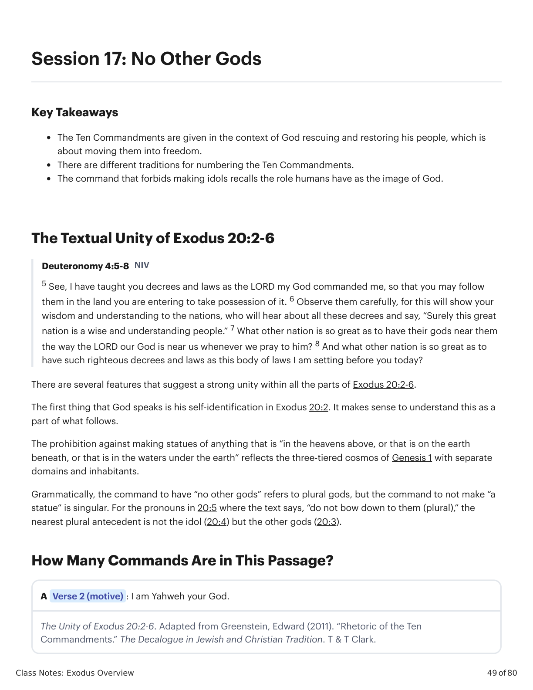
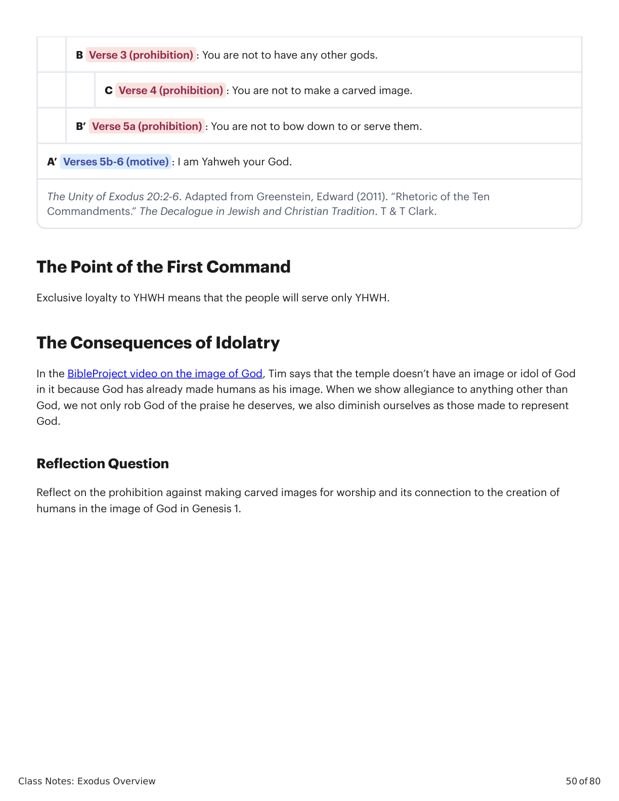

Sessão 17: No Other GodsSession 17: No Other Gods
Class Notes: Exodus Overview
49 of 80
Session 17: No Other Gods
Key Takeaways
The Ten Commandments are given in the context of God rescuing and restoring his people, which is
about moving them into freedom.
There are different traditions for numbering the Ten Commandments.
The command that forbids making idols recalls the role humans have as the image of God.
The Textual Unity of Exodus 20:2-6
Deuteronomy 4:5-8 NIV
5 See, I have taught you decrees and laws as the LORD my God commanded me, so that you may follow
them in the land you are entering to take possession of it. 6 Observe them carefully, for this will show your
wisdom and understanding to the nations, who will hear about all these decrees and say, “Surely this great
nation is a wise and understanding people.” 7 What other nation is so great as to have their gods near them
the way the LORD our God is near us whenever we pray to him? 8 And what other nation is so great as to
have such righteous decrees and laws as this body of laws I am setting before you today?
There are several features that suggest a strong unity within all the parts of Exodus 20:2-6.
The first thing that God speaks is his self-identification in Exodus 20:2. It makes sense to understand this as a
part of what follows.
The prohibition against making statues of anything that is “in the heavens above, or that is on the earth
beneath, or that is in the waters under the earth” reflects the three-tiered cosmos of Genesis 1 with separate
domains and inhabitants.
Grammatically, the command to have “no other gods” refers to plural gods, but the command to not make “a
statue” is singular. For the pronouns in 20:5 where the text says, “do not bow down to them (plural),” the
nearest plural antecedent is not the idol (20:4) but the other gods (20:3).
How Many Commands Are in This Passage?
A Verse 2 (motive) : I am Yahweh your God.
The Unity of Exodus 20:2-6. Adapted from Greenstein, Edward (2011). “Rhetoric of the Ten
Commandments.” The Decalogue in Jewish and Christian Tradition. T & T Clark.

�Êxodo X:Y. Tradução e Design Literário por Tim Mackie para BibleProject Classroom: José (2021).Exodus X:Y. Translation and Literary Design by Tim Mackie for BibleProject Classroom: Joseph (2021).
Class Notes: Exodus Overview
50 of 80
B Verse 3 (prohibition) : You are not to have any other gods.
C Verse 4 (prohibition) : You are not to make a carved image.
B’ Verse 5a (prohibition) : You are not to bow down to or serve them.
A’ Verses 5b-6 (motive) : I am Yahweh your God.
The Unity of Exodus 20:2-6. Adapted from Greenstein, Edward (2011). “Rhetoric of the Ten
Commandments.” The Decalogue in Jewish and Christian Tradition. T & T Clark.
The Point of the First Command
Exclusive loyalty to YHWH means that the people will serve only YHWH.
The Consequences of Idolatry
In the BibleProject video on the image of God, Tim says that the temple doesn’t have an image or idol of God
in it because God has already made humans as his image. When we show allegiance to anything other than
God, we not only rob God of the praise he deserves, we also diminish ourselves as those made to represent
God.
Reflection Question
Reflect on the prohibition against making carved images for worship and its connection to the creation of
humans in the image of God in Genesis 1.

�Êxodo X:Y. Tradução e Design Literário por Tim Mackie para BibleProject Classroom: José (2021).Exodus X:Y. Translation and Literary Design by Tim Mackie for BibleProject Classroom: Joseph (2021).